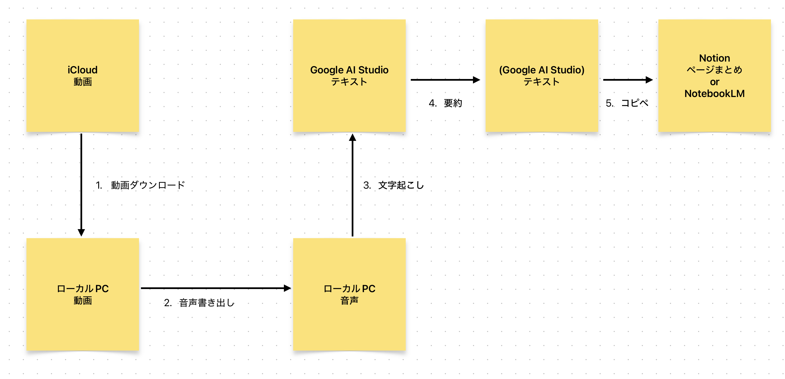
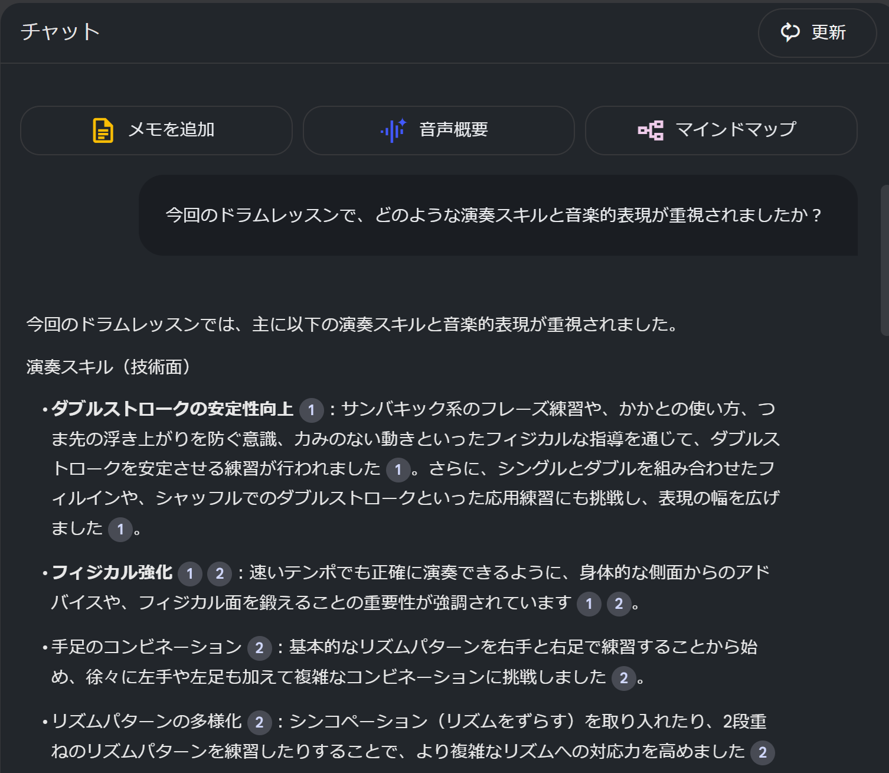

ドラムレッスン要約アプリ PoC
背景
- ドラムレッスンを月 2 回、計 3 時間受けている
- 一応毎回録画しているが、演奏で気になった部分以外は基本見直さなくてなんかもったいないなと思っていた
- 会社で会議の議事録(文字起こし+要約)がかなりいい感じにできる時代になっていたことを知ったので、使えるんじゃないかなと思った
整理
- 1 回のレッスンが 1 or 2 時間なのでかなり長い
- 動画でしか見れないのはストレスというか、シンプルに見なくなる
- レッスンの価値は大きく二軸ある
- 知識: レッスンの流れの中で自分が質問したことに対して、先生が自身の知識と経験からかみ砕いて説明してくれる
- 結構ジャズや曲のジャンルに関する文化的背景の話まで踏み込んだりする
- 経験: 自分一人でできなかった課題をかみ砕いて 1 つずつ指摘してもらう→改善！
- 知識: レッスンの流れの中で自分が質問したことに対して、先生が自身の知識と経験からかみ砕いて説明してくれる
- 今回は知識の部分をさらっと確認できたらいいな、くらいのもの
- 経験とか演奏面で課題感があったら自分で見直すので(そのハードルを下げるシステムは別途検討の余地があるかも)
図解

- 要は iCloud の動画が input、NotebookLM でいつでも復習できる状態が output
- 動画の download, upload に時間がかかるのは仕方ない気がしている
- 2 時間だと動画で 2.8GB, 音声だけでも 1.1GB(wav)
- モノラル/128kb/mp3 に書き出したら 101MB までは圧縮できた
現状のフロー
- [手動]iCloud から動画を download
- [自動]音声書き出し
- ffmpeg 使って音声ファイルを書き出す index.js を書いて、
node index.js path/to/movie.mp4で実行できるように
- ffmpeg 使って音声ファイルを書き出す index.js を書いて、
- [手動]Google AI Studio に音声ファイルを upload して文字起こしを実施
- プロンプトは以下(どこかのブログ記事で見つけた)
この音声を文字起こししてください。以下のルールに従ってください。「えー」「あのー」「まあ」「うーん」「そのー」などのフィラー（つなぎ言葉）は削除してください。会話の内容が不自然にならない範囲で、簡単な言い直しや言葉の繰り返しも削除してください（例：「今日は、今日は〜」→「今日は〜」にまとめる）。ChatGPT、YouTube、Meta、Appleなどの有名な英語の固有名詞は、カタカナではなく英語のまま表記してください。句読点や段落を適度に入れて、読みやすく整えてください。原則として、話し言葉をベースにしつつも読みやすい自然な文章に整えてください。ただし内容の改変は行わないでください。
- [手動]要約してもらう
- [手動]NotebookLM に突っ込む
アウトプット
 いい感じ！
所感
- アウトプットの内容はだいぶ満足
- 座学的な知識部分と、練習のコツみたいな心構え両方がサマリーで見れるのは大きい、助かる
- いろいろこぼれ落ちてたものをやっと拾えた感
- 思ったより自動化できなかった
- iCloud からの download
- iCloud 共有用リンクから selenium とか使って自動化しようとも思ったけど、結局共有用リンク作成が手動になってしまう
- API 一発で取ってこれるドライブとかに同期しておけばできるんだけどストレージ冗長管理になるのは渋いという感想
- ただこの辺りは人類が無限に解いている問題感があるので知見を探してもいいかもしれない
- 音声ファイル upload+文字起こし
- ここが本質なのに GeminiAPI 経由だとお金かかった(無料トークン使われなかった)ので個人だと結局手動の方が良くない？になってしまうという
- 技術的には可能
- 要約
- 同上
- NotebookLM
- 一応 youtubeのURLで指定できる っぽいので、そこに上げておけば download/upload の手間は省ける
- ただし動画なので読み込みにめっちゃ時間かかりそう
- 手動ステップが減るのはいいこと
- 一応 youtubeのURLで指定できる っぽいので、そこに上げておけば download/upload の手間は省ける
- iCloud からの download
- その他改善ポイント
- 音声ファイルの圧縮とカット
- 例: 無音区間カット、FFT かけて発話っぽい部分抜出し
- mp3 にしたら 1/10 圧縮できたので一旦いいかになった
- 普通にここが処理できればもっと高速化すると思う
- 動画ファイルの置き場同期の仕組み
- 個人の画像/動画をドライブに自動同期 && あんまり金がかからない仕組み
- データは置いておくだけでもお金がかかる
- 自動部分のバッチ化
- 「その日レッスン受けたら夜 or 次の日の朝には音声ファイルができてる」までいければハードルは下がる
- 音声ファイルの圧縮とカット
- やろうとしてやめたもの
- Vercel v0 でいい感じの GUI で一連のアプリを作る
- step1(共有用リンクからの動画取得)で躓いたし、なんか upload もできないしでやめた
- 何よりフロント慣れてないのに保守できない量のコードが一瞬で量産されるのが怖い
- 結局自分のレベル以上の能力を引き出そうとすると魔導書側に食われるというのが最近の Agentic Coding 全般への感想
- 地道なレベル上げが大事
- Vercel v0 でいい感じの GUI で一連のアプリを作る